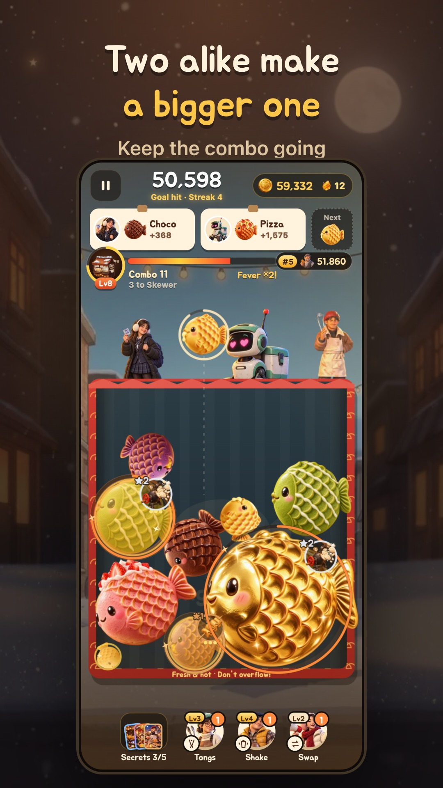

TAIYAKI MERGE · SHOP GROWTH
Two little taiyaki.
One bigger delight.
Drop taiyaki and bring matching pairs together. Keep your combo going and grow a little shop in this mobile merge puzzle game.
Free download · Optional ads and in-app purchases

Drop and merge
Choose a spot to drop a taiyaki. Two matching pieces merge into a bigger one.
Keep the combo going
Chain your merges, build combos, and enjoy Fever Time.
Grow your little shop
Use the currency you earn through play to grow your shop and discover collectibles.
What is Bungsegwon: Taiyaki Merge?
Bungsegwon: Taiyaki Merge is a mobile puzzle game by Portable Nutrition Co., Ltd. It combines matching taiyaki puzzles with shop growth and collection. It is available on Android and iPhone.
Frequently asked questions
How do I play?
Choose where to drop a taiyaki so that two matching pieces touch. Merge them into a bigger piece and build your score and combo.
Is it free to play?
The game is free to download, with optional rewarded ads and in-app purchases. Available products and prices are shown in your store and in the purchase screen.
Do I have to watch ads?
Rewarded ads are optional: tap an ad button when you want an extra reward. Ads may be unavailable when no ad is ready.
Where is my progress saved?
Progress is saved on your device. Deleting the app or clearing its data may remove your progress.
Which languages are supported?
Korean, English, and Japanese are supported. You can change the language in the game settings.
Need a hand?
Email your device model, app version, and the steps that led to the problem. We usually reply within 3 business days.
dev@ponu.co.kr